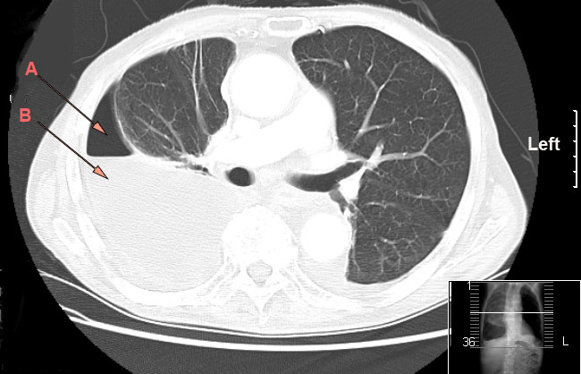
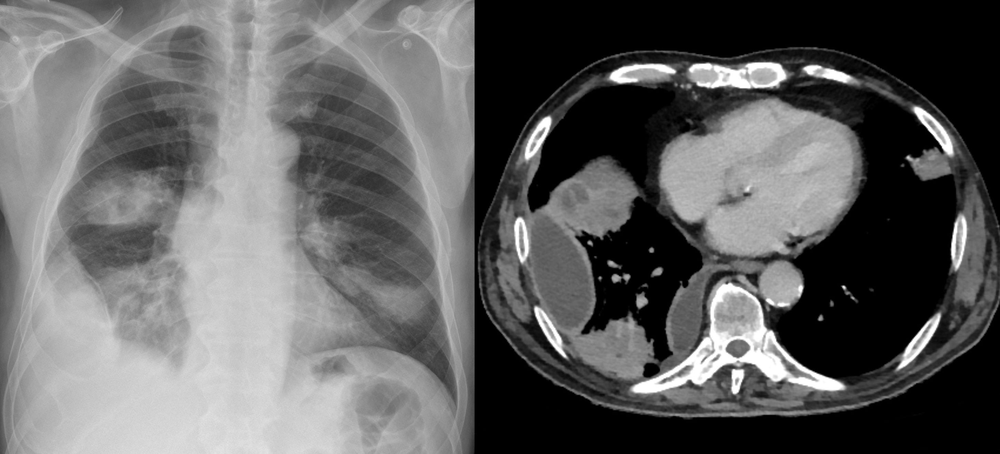
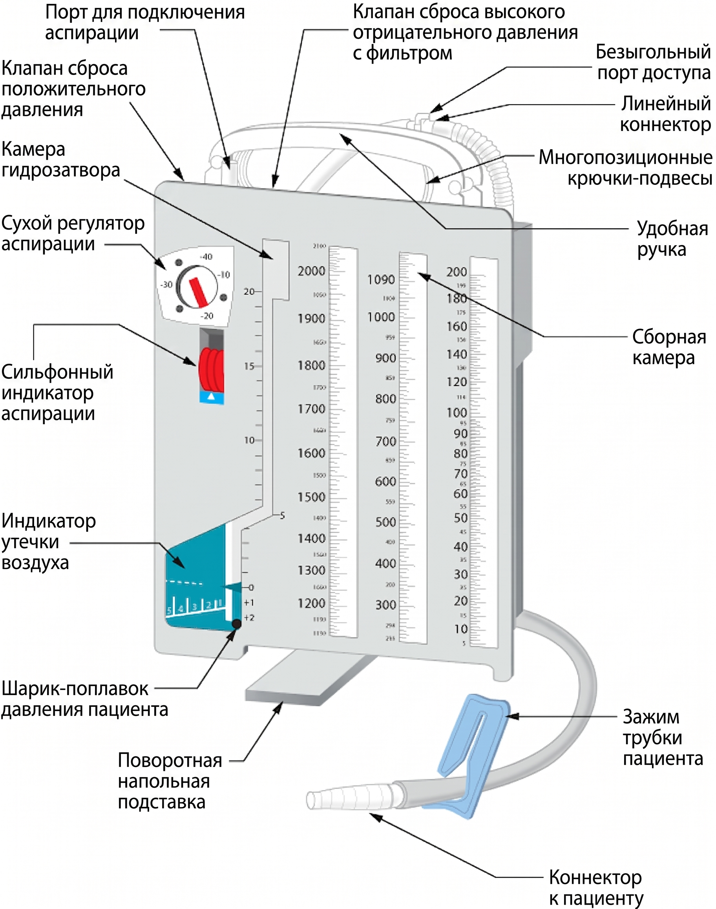

Гнойный плеврит
Плевральная полость и механизм образования выпота
Плевральная полость — это замкнутое щелевидное пространство между висцеральным и париетальным листками плевры. В норме оно содержит около 20 мл серозной жидкости, которая работает как смазка: лёгкое скользит внутри грудной клетки при каждом вдохе без трения. Объём этой жидкости невелик, потому что продукция и всасывание идут одновременно и уравновешивают друг друга.[Кузин, с. 116]
Всасывание обеспечивают лимфатические щели париетальной плевры — микроскопические поры в мезотелии, которые сообщаются напрямую с лимфатическими капиллярами. Их ещё называют «всасывающими люками»: через них жидкость и крупные молекулы уходят из полости в лимфу. Именно от проходимости этих щелей зависит, будет ли полость оставаться сухой или начнёт заполняться.
Когда плевра воспаляется, сосудистая проницаемость резко возрастает, и в полость выходит богатая белком жидкость — экссудат (от лат. exsudare — выпотевать). Параллельно нарастает отёк плевры и блокируются пути лимфатического оттока. Так возникает экссудативный плеврит — скопление экссудата в плевральной полости. На этом этапе жидкость ещё может быть стерильной: в начале заболевания экссудат обычно не содержит микроорганизмов и бывает серозным или серозно-фибринозным.[Кузин, с. 178]
Представьте себе, что происходит дальше. Фибрин — растворимый белок, который выпадает из экссудата в осадок, — начинает оседать на поверхности плевры и, что критично, закупоривает лимфатические щели. Всасывание из полости прекращается. Продукция экссудата при этом продолжается, а отток заблокирован. Жидкость накапливается — сначала медленно, потом всё быстрее, по мере того как фибриновые пробки плотнее закрывают «люки». Это и есть ключевой механизм нарастания выпота: не избыток продукции, а прекращение всасывания.[Кузин, с. 180]
Нарастающий объём жидкости создаёт давление внутри герметичной полости. Лёгкое, которое не может сопротивляться этому давлению, поджимается к корню — сдавливается и частично выключается из дыхания. Если выпот продолжает накапливаться, среднее давление в грудной клетке смещает органы средостения в здоровую сторону: сердце, трахея и крупные сосуды уходят от стороны поражения. Смещение средостения — уже признак угрозы: оно нарушает венозный возврат к сердцу и усиливает дыхательную недостаточность.
Асептический экссудативный плеврит — это предшественница эмпиемы, но ещё не она сама. Пока жидкость стерильна, процесс остаётся воспалительным, а не гнойным. Переход происходит при инфицировании: микроорганизмы проникают в полость гематогенно, по лимфатическим путям или при прорыве соседнего гнойника — и экссудат становится гнойным. Именно момент инфицирования отделяет экссудативный плеврит от эмпиемы — принципиальная граница, которая меняет и тактику лечения, и прогноз.
Определение и классификация эмпиемы плевры
Со времён Гиппократа скопление гнойного экссудата в плевральной полости называют эмпиемой плевры, или пиотораксом. Если говорить просто: это не просто воспалительный выпот, а полость, заполненная гноем, — так же как нарыв, только не под кожей, а между листками плевры. Разница принципиальна. Экссудативный плеврит может разрешиться сам или после антибиотиков; при эмпиеме гной накапливается, давление в полости растёт, и без активного вмешательства он найдёт выход — через грудную стенку или в бронх.
Кажется, что нагноение плеврального выпота — это лишь количественное изменение: чуть больше микробов, чуть гуще жидкость. На деле это качественный переход. Лимфатические щели париетальной плевры закупориваются фибрином, всасывание из полости прекращается, и дальше гной только прибывает. Без понимания этого механизма неясно, почему при эмпиеме недостаточно просто подождать — нужно вывести содержимое наружу.[Кузин, с. 180]
Классифицируют эмпиему по трём независимым осям: по срокам течения, по тому, насколько свободно гной занимает полость, и по тому, что происходит в самом лёгком. Посмотрите на классификацию целиком — она сведена в таблицу ниже, а затем разобрана подробно.
| Ось | Вариант | Критерий / Характеристика |
|---|---|---|
| I. Клиническое течение | Острая эмпиема | Длительность до 8 нед |
| Хроническая эмпиема | Длительность более 8 нед | |
| II. Распространённость | Тотальная эмпиема | Гной свободно занимает всю плевральную полость |
| Осумкованная — базальная | Между диафрагмой и нижней поверхностью лёгкого | |
| Осумкованная — пристеночная | Вдоль боковой стенки грудной клетки | |
| Осумкованная — междолевая | В щели между долями лёгкого | |
| Осумкованная — апикальная | Над верхушкой лёгкого | |
| Осумкованная — парамедиастинальная | Прилежит к средостению | |
| Осумкованная — многокамерная | Несколько гнойных скоплений на разных уровнях, разделены спайками | |
| III. Лёгочный процесс | Парапневмоническая эмпиема | Эмпиема сочетается с пневмонией без деструкции лёгкого |
| Сочетанная с деструкцией лёгкого | Абсцесс или гангрена лёгкого как источник нагноения полости |
По клиническому течению эмпиему делят на острую и хроническую, и граница между ними — 8 недель. Острая эмпиема — это процесс длительностью до 8 недель: стенки полости ещё не успели превратиться в плотные рубцовые шварты, лёгкое сохраняет способность расправиться после удаления гноя. Когда болезнь затягивается дольше 2 месяцев, говорят о хронической эмпиеме: полость уже окружена толстой фиброзной оболочкой, лёгкое сдавлено и перестаёт работать как насос. Эта граница в 8 недель — не условность. Именно до неё у хирурга есть шанс закрыть полость консервативными методами; позже без операции обойтись, как правило, не удаётся.
По распространённости выделяют два принципиально разных варианта. Тотальная эмпиема — гной свободно занимает всю плевральную полость, не встречая никаких перегородок. Это проще для дренирования, но опаснее для гемодинамики: коллапс лёгкого и смещение средостения происходят быстро. При осумкованной эмпиеме гной отграничен спайками — как замурованный карман. Таких карманов бывает несколько видов: базальный (между диафрагмой и нижней поверхностью лёгкого), пристеночный (вдоль боковой стенки), междолевой (в щели между долями), апикальный (над верхушкой лёгкого), парамедиастинальный (у средостения) и многокамерный — когда гнойные скопления расположены на разных уровнях и разделены между собой спайками. Многокамерная форма хирургически наиболее трудна: нельзя одним дренажом опустошить сразу все камеры.
По характеру процесса в лёгком различают ещё два варианта. Парапневмоническая эмпиема — это нагноение плеврального выпота на фоне пневмонии: бактерии переходят из воспалённой лёгочной ткани в экссудат, который уже был в полости. Лёгкое при этом не разрушено, деструкции нет. Совсем иначе обстоит дело, когда эмпиема сочетается с деструкцией лёгкого — абсцессом или гангреной: гной поступает в плевральную полость непосредственно из распадающейся паренхимы, нередко через бронхоплевральный свищ, и объём поражения несопоставимо больше.
Как видно из таблицы, три оси классификации независимы: острая эмпиема может быть и тотальной, и осумкованной; парапневмоническая — и острой, и хронической. Именно сочетание всех трёх характеристик определяет тактику лечения — срок вмешательства, выбор доступа и объём операции. Если бы классификация сводилась к одному признаку, хирург не мог бы заранее оценить ни сложность дренирования, ни вероятность расправления лёгкого.
Этиология острой эмпиемы плевры
Кажется, что гнойный плеврит — болезнь одного микроба: нашли возбудителя, назначили антибиотик, и дело сделано. На деле спектр возбудителей острой эмпиемы плевры широк и меняется в зависимости от того, откуда инфекция попала в плевральную полость. Именно источник инфицирования определяет, с каким микробным пейзажем придётся работать хирургу.
По происхождению возбудители делятся на три большие группы: грамположительная кокковая флора, грамотрицательная аэробная флора и анаэробная неклостридиальная флора. Реже эмпиема имеет специфическую туберкулёзную природу. Посмотрите, как эти группы соотносятся с клиническими ситуациями, — разбор каждой строки следует ниже.
| Группа возбудителей | Типичные представители | Клиническая ситуация |
|---|---|---|
| Грамположительная кокковая флора | Staphylococcus aureus, Streptococcus pneumoniae | Парапневмоническая эмпиема, послеоперационные осложнения |
| Грамотрицательная аэробная флора | Кишечная палочка (E. coli), протей (Proteus spp.), синегнойная палочка (Pseudomonas aeruginosa) | Эмпиема при поддиафрагмальном абсцессе, медиастините, тяжёлая госпитальная инфекция |
| Анаэробная неклостридиальная флора | Пептострептококки (Peptostreptococcus spp.), бактероиды | Абсцесс лёгкого, деструктивные пневмонии, аспирационные процессы |
| Специфическая флора | Mycobacterium tuberculosis | Перфорация туберкулёзной каверны в плевральную полость |
Как видно из таблицы, ни одна строка не существует сама по себе: каждая группа микробов «привязана» к определённому анатомическому источнику. Именно эта привязка — главное, что здесь нужно удержать в голове.
Грамположительная кокковая флора — стафилококки и пневмококки — исторически лидировала в структуре возбудителей. Однако рядом с ней всё увереннее стоит грамотрицательная аэробная флора: кишечная палочка, протей и синегнойная палочка. Эти микробы — типичные обитатели кишечника и дыхательных путей, и в плевральную полость они попадают по соседству. Синегнойная палочка особенно опасна: она устойчива к большинству стандартных антибиотиков и даёт тяжёлое, торпидное течение. Если бы не грамотрицательная флора, достаточно было бы узкого спектра антибактериальной терапии — на деле же эмпиема требует препаратов широкого действия с самого начала.
Особое место занимает анаэробная неклостридиальная флора — прежде всего пептострептококки (от греч. peptos — «сваренный, переработанный» + streptococcus): это анаэробные стрептококки, которые живут без кислорода и именно поэтому процветают в замкнутых гнойных полостях. Представьте себе герметично закрытую банку с питательной средой — вот примерно та среда, которую создаёт осумкованный абсцесс лёгкого. Неклостридиальные анаэробы в большинстве случаев обнаруживаются при абсцессах лёгких и других гнойных процессах, и именно поэтому деструктивные пневмонии и абсцессы лёгкого — главный источник анаэробного инфицирования плевры. Прорыв абсцесса в плевральную полость переносит сразу весь микробный пейзаж: и аэробов, и анаэробов одновременно.
Связь с лёгочной деструкцией принципиальна. При абсцессе лёгкого и деструктивных пневмониях гной сначала скапливается внутри лёгочной ткани, но стенка полости не выдерживает — и прорыв происходит в плевру. Возникает пиопневмоторакс: гной и воздух вместе. Такой путь инфицирования даёт самую тяжёлую форму острой эмпиемы — с быстрым коллапсом лёгкого и смещением средостения. При бронхоэктатической болезни механизм иной: хроническое нагноение в расширенных бронхах поддерживает постоянный микробный поток, который со временем проникает в плевральную полость через висцеральную плевру.
Туберкулёзная эмпиема — это особый вариант, при котором возбудитель не гноеродный, а специфический: Mycobacterium tuberculosis. Она возникает при перфорации туберкулёзной каверны в плевральную полость: каверна — это полость распада в лёгком, образованная казеозным некрозом, и когда её стенка разрушается до висцеральной плевры, микобактерии прямо попадают в плевральное пространство. Экссудат при этом специфический, нередко геморрагический, и стандартные схемы антибактериальной терапии на него не действуют.
Вторичные эмпиемы при поддиафрагмальном абсцессе и медиастините — отдельная и клинически коварная группа. При поддиафрагмальном абсцессе гной располагается под куполом диафрагмы, и инфекция переходит в плевральную полость контактным путём — через диафрагму или по лимфатическим коллекторам. Возбудители здесь те же, что при абсцессах брюшной полости: кишечная палочка, протей, анаэробы. При медиастините путь обратный — из средостения инфекция распространяется латерально в плевральные синусы, и флора там смешанная, часто госпитальная.
Логичным, но редким исходом нелечёной эмпиемы становится empyema necessitatis — буквально «вынужденная эмпиема»: состояние, при котором гной, не найдя другого выхода, прорывает грудную стенку и выходит под кожу. Это не самостоятельная этиологическая форма, а финал любой затянувшейся эмпиемы — независимо от возбудителя.
Главный вывод раздела: возбудитель эмпиемы всегда вторичен по отношению к источнику инфицирования. Определить источник — значит предсказать микробный пейзаж и выбрать правильную антибактериальную тактику ещё до получения результатов посева.
Осложнения острой эмпиемы плевры
Острая эмпиема не замкнута в плевральной полости так надёжно, как принято думать. Кажется, что гной, накопившийся между листками плевры, «сидит» там до тех пор, пока хирург его не эвакуирует. На деле давление нарастающего экссудата постепенно разрушает окружающие ткани, и гной ищет выход сам — в бронх, в лёгочную паренхиму или наружу через грудную стенку. Направление этого прорыва определяет характер осложнения.

Удобно разобрать осложнения по четырём ветвям: бронхиальное, плевральное, трансмуральное и системное. Каждая ветвь — это отдельный путь, по которому инфекция выходит за исходные границы.
Бронхиальная ветвь. Когда гной разрушает стенку бронха и прорывается в его просвет, между плевральной полостью и бронхиальным деревом образуется стойкое сообщение — бронхоплевральный свищ (патологический ход, через который плевральная полость и бронх сообщаются напрямую). Клинически это проявляется обильным отделением мокроты. Примечательна одна поза: в положении на здоровом боку гной из плевральной полости под силой тяжести стекает к свищевому отверстию и поступает в бронх, поэтому именно тогда кашель становится наиболее продуктивным. Представьте воронку, перевёрнутую набок: содержимое устремляется к самой низкой точке. Ровно то же происходит с гноем в плевральной полости, когда больной ложится на здоровый бок.
Плевральная ветвь. Особое место занимает прорыв абсцесса лёгкого, имеющего широкое сообщение с воздухоносными путями, в плевральную полость. В этом случае туда одновременно поступают гной и воздух — возникает пиопневмоторакс (скопление гноя и воздуха в плевральной полости). Течение пиопневмоторакса особенно тяжёлое: воздух под давлением смещает средостение, лёгкое коллабирует, а массивное инфицирование плевры разворачивается стремительно. Летальность при дыхательных осложнениях, связанных с подобными чресплевральными процессами, достигает 15–30 %.[Кузин, с. 183]
Трансмуральная ветвь. Гнойный экссудат не всасывается через воспалённую плевру, а потому давление в полости нарастает. Постепенно оно разрушает ткани грудной стенки. Гной проникает в межмышечные пространства, затем под кожу — образуются гнойники, которые в конечном счёте прорываются наружу через кожные покровы. Это и есть empyema necessitatis — буквально «вынужденная эмпиема», при которой организм сам прокладывает путь дренирования, когда медицинская помощь запоздала или оказалась недостаточной. Если бы такого аварийного выхода не существовало, нарастающее давление разрушало бы ткани глубже — с риском перехода в медиастинит или перикардит.[Кузин, с. 181]
Системная ветвь. Развитие эмпиемы плевры сопровождается нарушением функций сердечно-сосудистой системы, дыхания, печени, почек и эндокринных желёз. Эти нарушения могут развиваться остро или постепенно. Механизм понятен: массивная гнойная полость — это постоянный источник токсинов и медиаторов воспаления. Сердце реагирует тахикардией и снижением ударного объёма; почки страдают от гиповолемии и токсического поражения канальцев; печень включается в острофазовый ответ, а при затяжном течении накапливает дистрофические изменения. Эндокринная система на первых порах мобилизует стресс-реакцию, но при хронизации процесса её резервы истощаются. Чем раньше дренирована плевральная полость, тем меньше времени у системного воспаления, чтобы перевести органы в режим повреждения.[Кузин, с. 183]
Из всего перечисленного следует одно практическое правило: каждая из четырёх ветвей осложнений означает, что момент для раннего дренирования упущен. Бронхоплевральный свищ, пиопневмоторакс, empyema necessitatis и полиорганная дисфункция — это не самостоятельные болезни, а последовательные стадии одного нелеченого процесса.
Диагностика эмпиемы плевры: лучевые методы
Кажется, что главное в диагностике эмпиемы — анализ плеврального экссудата, и лучевые методы лишь подтверждают очевидное. На деле без визуализации невозможно ни точно определить объём скопления, ни отличить свободную эмпиему от осумкованной, ни выбрать точку для пункции — а цена ошибки здесь измеряется не пересданным анализом, а вслепую введённой иглой в паренхиму лёгкого.

Отправная точка диагностики — полипозиционная рентгенография грудной клетки. Снимки выполняют в прямой и боковой проекциях, а при подозрении на осумкованную эмпиему — ещё и в положении лёжа на больном боку (латеропозиция). При тотальном или субтотальном скоплении гноя рентгенограмма показывает гомогенную тень — равномерное затемнение без каких-либо внутренних структур, потому что плотная жидкость поглощает рентгеновские лучи примерно одинаково по всей толще. Эта тень смещает средостение в здоровую сторону. Если одновременно присутствует воздух — через бронхоплевральный свищ или при пиопневмотораксе — появляется горизонтальный уровень жидкости: чёткая горизонтальная граница между тёмным газовым пузырём сверху и белой тенью жидкости снизу, строго параллельная полу независимо от положения пациента. При осумкованных эмпиемах в других отделах плевральной полости тень может быть треугольной, полушаровидной или иной формы.
Ультразвуковое исследование плевральной полости — следующий шаг, особенно когда рентгенограмма не позволяет уверенно отличить осумкованный гной от ателектаза или опухоли. УЗИ выявляет скопление жидкости объёмом от 100 мл, то есть улавливает даже небольшие начальные скопления, которые рентген просто пропустит. Представьте себе эхо от стакана воды в тёмной комнате — примерно так ультразвуковой луч «слышит» жидкость там, где рентгеновский снимок видит лишь однородное затемнение. Кроме выявления выпота, УЗИ незаменимо как навигатор: под его контролем выполняют пункцию плевральной полости, выбирая оптимальную точку и глубину прохождения иглы, что резко снижает риск ранения диафрагмы или паренхимы лёгкого.[Синдромология, с. 60]
Компьютерная томография — наиболее информативный метод из всех рутинно доступных. Она уточняет точную локализацию гноя, его распространённость, наличие перегородок внутри полости и — что особенно важно при парапневмонической эмпиеме — связь с лёгочным процессом: абсцессом, бронхоэктазами, деструктивной пневмонией. Именно компьютерная томография и полипозиционное рентгенологическое исследование признаются наиболее информативными методами при обследовании таких пациентов. Если бы этого метода не было, хирург шёл бы в операционную с рентгенограммой и данными УЗИ — и нередко обнаруживал бы интраоперационно, что источник эмпиемы — абсцесс лёгкого, а не изолированный плеврит.
Посмотрите на сводную таблицу ниже — в ней три метода стоят рядом, и различия между ними видны сразу.
| Метод | Что выявляет | Минимальный объём / ограничения |
|---|---|---|
| Полипозиционная рентгенография | Гомогенная тень, горизонтальный уровень жидкости при наличии воздуха, смещение средостения, форма осумкованной эмпиемы | Выявляет значительные скопления; не разграничивает жидкость и ателектаз, не показывает перегородки |
| УЗИ плевральной полости | Скопление жидкости, перегородки, контроль пункции в реальном времени | От 100 мл; ограничен при воздухе в полости (газ отражает волну) |
| Компьютерная томография | Точная локализация и объём, связь с лёгочным процессом (абсцесс, бронхоэктазы, пневмония), толщина плевры | Без существенного ограничения по объёму; лучевая нагрузка, недоступна экстренно в части учреждений |
Как видно из таблицы, методы не заменяют, а дополняют друг друга. Рентгенография — первый и быстрый взгляд: она покажет, есть ли массивное затемнение и присутствует ли воздух. УЗИ добавляет то, чего рентген не даёт: выявляет скопления от 100 мл и позволяет безопасно пунктировать полость под прямым контролем. Компьютерная томография отвечает на вопрос о причине и распространённости — без неё хирург не знает, с чем именно столкнётся: с изолированной эмпиемой или с деструкцией лёгочной паренхимы.[Синдромология, с. 60]
Видеоторакоскопия — эндоскопическое исследование плевральной полости с помощью видеокамеры, введённой через прокол грудной стенки, — занимает особое место, потому что одновременно является и диагностическим, и лечебным методом. Через торакоскоп хирург осматривает всю плевральную полость изнутри, оценивает характер и распространённость гнойного процесса, берёт материал для исследования и тут же выполняет санацию: удаляет фибринозные наложения, разделяет перегородки, промывает полость. Если бы этого инструмента не было, пришлось бы либо ограничиться дренированием вслепую — с риском неполной эвакуации при осумкованной эмпиеме, — либо сразу переходить к широкой торакотомии с несравнимо большей травмой для пациента.
Диагностика эмпиемы плевры: исследование экссудата
Получив жидкость из плевральной полости, врач держит в руках главный диагностический материал — экссудат. Именно его состав решает три вопроса сразу: это гной или не гной, какой возбудитель его вызвал и к каким антибиотикам он чувствителен. Кажется, что мутная жёлто-зелёная жидкость и без анализов говорит сама за себя. На деле визуальная оценка — лишь повод немедленно направить материал в лабораторию, потому что внешний вид не называет возбудителя и не предсказывает его устойчивость.
Первый шаг — установить, действительно ли перед нами экссудат, а не транссудат. Транссудат — это фильтрат плазмы, бедный белком: он накапливается при сердечной недостаточности или нефротическом синдроме и воспаления не несёт. Экссудат богат белком, потому что воспалённые сосуды плевры пропускают крупные молекулы. Пороговое значение — 50 г/л: плевральный выпот с содержанием белка 50 г/л и выше относят к экссудату. При воспалительных заболеваниях содержание белка в плевральной жидкости закономерно возрастает. Если белка меньше, диагноз эмпиемы отпадает — и поиск переключается на кардиальную или почечную патологию.[Синдромология, с. 42]
Сводку лабораторных критериев удобно держать перед глазами. Посмотрите на таблицу ниже — она собирает пороговые значения, каждое из которых что-то решает.
| Показатель | Пороговое значение | Значение для диагноза |
|---|---|---|
| Содержание белка | ≥ 50 г/л | Экссудат; при меньших значениях — транссудат, эмпиема исключается |
| Характер клеточного состава | Нейтрофилы > 50 % при остром процессе; лимфоциты преобладают при туберкулёзе и опухолях | Нейтрофильный плеоцитоз — признак бактериальной эмпиемы; лимфоцитоз — повод исключить туберкулёзную эмпиему и злокачественный выпот |
| Посев на флору | Рост возбудителя | Идентификация возбудителя; при анаэробной инфекции — посев в анаэробных условиях обязателен |
| Чувствительность к антибиотикам | МИК определяется к конкретному изоляту | Основа для целенаправленной антибиотикотерапии; без этого шага лечение остаётся эмпирическим |
| Атипичные клетки при цитологии | Обнаружение опухолевых клеток | Исключение злокачественного плеврита как причины выпота |
Как видно из таблицы, белок отделяет экссудат от транссудата, а дальше клеточный состав и посев уже разбирают экссудаты между собой. Нейтрофильный плеоцитоз — картина острой бактериальной эмпиемы. Лимфоцитоз с небольшой долей нейтрофилов заставляет думать о туберкулёзной эмпиеме или злокачественном поражении плевры. Главная строка таблицы — посев: без него антибиотик выбирают наугад.
Бактериологическое исследование экссудата — это посев полученной жидкости на питательные среды с последующим определением чувствительности выросших колоний к антибактериальным препаратам. Проще говоря: лаборатория даёт бактерии возможность вырасти, смотрит, что выросло, и проверяет, какой антибиотик её убивает. Если бы этого исследования не было, пришлось бы либо перебирать препараты вслепую, либо сразу назначать схему широкого спектра — с риском не попасть в возбудителя или создать устойчивость. Особого внимания требуют анаэробы: пептострептококки и другие неклостридиальные анаэробы часто участвуют в гнойном процессе, но гибнут на воздухе, поэтому экссудат для анаэробного посева должен попасть в среду немедленно, без контакта с кислородом.
Цитологическое исследование экссудата — это микроскопия клеточного осадка жидкости: лаборант считает, каких клеток больше и нет ли среди них атипичных. Результат решает сразу два вопроса: подтверждает бактериальную природу процесса (нейтрофилы) и исключает злокачественный плеврит или туберкулёзную эмпиему (лимфоциты, опухолевые клетки).
Отдельного внимания заслуживает одна клиническая особенность, которую легко объяснить не так. При эмпиеме боль нередко отдаёт в плечо — и это сбивает с толку: студент думает про плечевой сустав, а не про плевру. Механизм прямой: диафрагмальная плевра иннервируется диафрагмальным нервом (C3–C5), и её раздражение воспринимается мозгом как боль в зоне плеча. Схема иррадиации соматических болей показывает, что плевра — один из источников боли, которая проецируется далеко от очага. Зная это, врач не теряет время на ортопедическое обследование и правильно трактирует жалобу.
Итог раздела прост. Диагноз эмпиемы стоит на трёх лабораторных опорах: белок ≥ 50 г/л подтверждает экссудат, нейтрофильный цитоз указывает на бактериальную природу, а посев с определением чувствительности называет конкретного возбудителя и конкретный антибиотик. Пропустить любой из этих шагов — значит лечить предположение, а не болезнь.[Синдромология, с. 42]
Принципы лечения острой эмпиемы плевры
Кажется, что главное при эмпиеме — подобрать нужный антибиотик и дать ему время сработать. На деле антибиотик один с гнойным экссудатом не справится: в замкнутой полости без оттока он просто не достигает нужной концентрации у стенок, а плёнки фибрина защищают колонии бактерий от любого системного препарата. Поэтому лечение острой эмпиемы строится на трёх равноправных принципах, и ни один из них нельзя пропустить.
Первый принцип — раннее полное удаление экссудата из плевральной полости. Пока гной стоит, фибрин оседает на висцеральной плевре и рубцуется: если промедлить, лёгкое окажется замуровано в панцире из соединительной ткани. Экссудат удаляют пункцией или через дренажную трубку с постоянной аспирацией — в зависимости от объёма и густоты содержимого. При пункции откачивание ведут вакуум-отсосом или шприцем Жане, однако за один приём не рекомендуется удалять более 1500 мл жидкости, иначе резкое смещение органов средостения грозит коллапсом.[Кузин, с. 184]
Второй принцип — расправление лёгкого, то есть восстановление его нормального объёма после того, как гной сдавил и спал лёгочную ткань. Представьте себе сдутый мяч внутри грудной клетки: пока давление снаружи выше, чем изнутри, стенки не расправятся. Активная аспирация через дренаж создаёт отрицательное давление в полости и буквально «вытягивает» лёгкое к рёберной стенке. Расправленное лёгкое само облитерирует полость, лишая бактерии пространства для размножения.
Третий принцип — антибактериальная терапия. Её назначают с учётом данных бактериологического исследования экссудата, не дожидаясь окончательного посева: стартуют с препаратов широкого спектра и корректируют схему по результату.
Если бы не было возможности менять инвазивность по ходу лечения, пришлось бы сразу оперировать всех без разбора или, напротив, наблюдать, пока пункции уже не помогают. Поэтому тактика выстроена ступенчато. При небольшом объёме и жидком экссудате начинают с пункций. Если после двух-трёх пункций полость не уменьшается или экссудат густеет и не эвакуируется иглой, переходят к закрытому дренированию с активной аспирацией. Когда и дренаж не справляется — полость осумковалась, образовались перемычки, свободный отток невозможен — выполняют видеоторакоскопию: она позволяет разрушить перегородки, санировать полость и при необходимости установить дренажи под контролем зрения.
Переход к более инвазивному методу определяется не сроком, а ответом на лечение: отсутствие динамики при правильно выполненном предыдущем шаге — достаточное основание двигаться дальше.
Пункция и дренирование плевральной полости при острой эмпиеме
Выбор метода вмешательства при острой эмпиеме подчиняется простой логике: начинать с наименее травматичного способа и переходить к следующему, только если предыдущий не справился. Четыре шага этой последовательности — плевральная пункция, дренирование, плевральный лаваж и широкая торакотомия — образуют единую лестницу, где каждая ступень имеет свои показания и границы.

Плевральная пункция — первый и наименее инвазивный способ опорожнить полость. Её выполняют по задней подмышечной или лопаточной линии в шестом–седьмом межреберье, в точке максимального притупления перкуторного звука; иглу проводят по верхнему краю нижележащего ребра, чтобы не повредить сосудисто-нервный пучок. Полученный экссудат сразу отправляют на бактериологическое и цитологическое исследование. Принципиально важно: за одну пункцию нельзя удалять более 1500 мл жидкости — быстрое расправление лёгкого после длительного сдавления грозит отёком. При небольших и хорошо дренируемых скоплениях пункции повторяют каждые 1–2 дня; если экссудат накапливается вновь и полость не «подсыхает» — показано дренирование.[Кузин, с. 184]
Дренажную трубку устанавливают через небольшой разрез грудной стенки. Чтобы гной уходил самотёком, трубку диаметром не менее 15 мм ставят в нижнем отделе полости, обычно в шестом–восьмом межреберье по задней подмышечной линии. Второй дренаж, при необходимости, проводят в верхний отдел — для введения антисептиков или промывной жидкости. Расправление лёгкого контролируют рентгенологически: на прямой рентгенограмме исчезает горизонтальный уровень жидкости, гомогенная тень уменьшается, а лёгочный рисунок восстанавливается на всём протяжении. Дренаж не убирают, пока лёгкое не расправилось полностью и отделяемое по трубке не стало скудным и серозным.[Кузин, с. 125]
Когда одного дренажа недостаточно для санации свободной эмпиемы, прибегают к плевральному лаважу — постоянному промыванию плевральной полости через две трубки: антисептическую жидкость (например, диоксидин до 100 мг в 100–150 мл физиологического раствора) вводят через верхний дренаж, а через нижний её аспирируют вместе с гноем и фибрином. Спустя 2–3 дня после улучшения отсасивание жидкости проводят через обе трубки и добиваются полного расправления лёгкого. Метод показан только при свободных эмпиемах, где жидкость циркулирует по всей полости. При бронхиальном свище плевральный лаваж противопоказан: промывная жидкость неизбежно затечёт через свищ в бронхиальное дерево и вызовет аспирационную пневмонию.[Кузин, с. 184]
И вот складывается вопрос: когда консервативные методы всё же не справляются и нужно идти на открытую операцию? Показанием служит присутствие в полости секвестров плевральной полости — плотных омертвевших масс фибрина и некротизированных тканей, которые не вымываются через дренаж и блокируют расправление лёгкого. В таких случаях выполняют широкую торакотомию с резекцией рёбер, прямой санацией полости и последующим дренированием. Подход травматичен, и именно поэтому его оставляют для ситуаций, где дренаж с лаважем заведомо не помогут.
Таким образом, последовательность нарастает по степени вмешательства: пункция при небольшом скоплении → дренирование при рецидивирующем или объёмном выпоте → лаваж через две трубки при свободной эмпиеме без свища → торакотомия при наличии крупных секвестров. Каждый следующий шаг оправдан только тогда, когда предыдущий исчерпал свои возможности.
Антибактериальная терапия при острой эмпиеме
Кажется, что при эмпиеме плевры достаточно ввести антибиотик внутривенно — и препарат сам доберётся до гноя. На деле густой экссудат, фибриновые напластования и сниженный кровоток в воспалённой плевре создают барьер, через который системный препарат проникает плохо. Именно поэтому антибактериальная терапия при острой эмпиеме строится на двух путях одновременно: системном введении и местном — прямо в плевральную полость.
Выбор препарата определяется возбудителем, который устанавливают по результатам бактериологического исследования экссудата. Но посев даёт ответ через двое-трое суток, и к тому времени лечение уже идёт. Поэтому стартовую схему подбирают эмпирически, ориентируясь на наиболее вероятную флору при данном клиническом контексте.
При грамотрицательной флоре — а это прежде всего синегнойная палочка, клебсиелла, кишечная палочка — применяют цефалоспорины третьего поколения, например фортум (цефтазидим), и карбапенемы — группу антибиотиков с наиболее широким спектром действия среди всех бета-лактамов, устойчивых к большинству бактериальных ферментов, разрушающих пенициллины; к ним относятся тиенам, имипенем и другие. Карбапенемы — это своего рода «тяжёлая артиллерия»: их приберегают для ситуаций, когда препараты первой линии не справляются, или когда возбудитель изначально заведомо устойчив.
При анаэробной инфекции — в том числе вызванной пептострептококками — системного антибиотика широкого спектра недостаточно. Здесь добавляют метронидазол — препарат, действующий избирательно на анаэробные бактерии и простейшие: он проникает внутрь клетки и повреждает ДНК микроорганизма, лишённого кислородных механизмов защиты. Местно в полость вводят и антисептики: прежде всего диоксидин — синтетический антисептик широкого спектра, активный в том числе против анаэробов и синегнойной палочки, устойчивых к обычным антибиотикам. Его вводят в дозе до 100 мг, растворённых в 100–150 мл физиологического раствора.[Кузин, с. 184]
Туберкулёзная эмпиема стоит особняком: обычные антибактериальные препараты против микобактерии туберкулёза не действуют. Здесь назначают туберкулостатические препараты — средства, специфически подавляющие рост и размножение микобактерий: изониазид, рифампицин, этамбутол и другие в стандартных схемах противотуберкулёзной химиотерапии.
Посмотрите на сводку ниже — она собирает всё сказанное в одном месте и позволяет сравнить препараты по мишени и пути введения.
| Препарат / группа | Мишень (флора) | Путь введения |
|---|---|---|
| Цефалоспорины III поколения (цефтазидим/фортум и др.) | Грамотрицательная аэробная флора | Системный (в/в) |
| Карбапенемы (тиенам, имипенем и др.) | Грамотрицательная флора, полирезистентные штаммы | Системный (в/в) |
| Метронидазол | Анаэробная флора (в том числе пептострептококки) | Системный (в/в или внутрь) |
| Диоксидин (до 100 мг в 100–150 мл физраствора) | Анаэробы, синегнойная палочка, смешанная флора | Местный (в плевральную полость) |
| Туберкулостатические препараты (изониазид, рифампицин и др.) | Mycobacterium tuberculosis | Системный; при необходимости — местный |
Как видно из таблицы, местный путь введения занимает в ней лишь одну строку — диоксидин. Это не случайность. Большинство препаратов вводят системно, и только антисептик идёт непосредственно в полость. Представьте себе полость, заполненную густым гноем: системный антибиотик добирается туда через кровоток, но его концентрация в центре гнойника остаётся низкой. Диоксидин, введённый прямо в 100–150 мл физиологического раствора, омывает плевру изнутри и достигает именно тех участков, куда кровь практически не доходит. Если бы местного введения не было, пришлось бы либо повышать системные дозы до токсичных, либо мириться с тем, что часть флоры в полости остаётся необработанной.
При свободных эмпиемах плевры антисептический раствор подают через дренажные трубки непрерывно — как плевральный лаваж: жидкость вводят через одну трубку и выводят через другую. Это не просто промывание, а постоянное поддержание терапевтической концентрации антисептика внутри полости.[Кузин, с. 184]
Главный принцип антибактериальной терапии при острой эмпиеме: системное введение задаёт концентрацию в крови и тканях, а местное — в самой полости; только вместе они перекрывают всю зону инфекции.
Хроническая эмпиема плевры: определение и патогенез
Острая эмпиема переходит в хроническую, если активное лечение не начато вовремя или оказалось недостаточным. Граница проведена по времени: заболевание длительностью более 8 недель считается хроническим. Срок кажется произвольным, но за ним стоит вполне конкретный биологический рубеж: именно к этому времени в плевральной полости успевают сформироваться грубые рубцовые изменения, которые уже не поддаются консервативному лечению.
Кажется, что гнойная полость — это просто мешок с жидкостью, который достаточно осушить, и лёгкое само расправится. На деле всё устроено иначе. Хроническое воспаление в плевре запускает мощное рубцевание: на висцеральном и париетальном листках плевры нарастают плотные соединительнотканные наложения — швартры (от нем. Schwarte — толстая кожа, корка). Представьте себе, что лёгкое обернули несколькими слоями плотного картона: оно уже не может расправиться при вдохе, сколько бы жидкости ни удалили снаружи. Именно так и работают швартры — как механический панцирь, который удерживает лёгкое в спавшемся состоянии (коллапсе), то есть в объёме значительно меньше нормального, с нефункционирующей паренхимой.
Переход от острой эмпиемы к хронической разворачивается поэтапно. Сначала в полости накапливается гнойный экссудат и на плевре появляются тонкие фибринозные плёнки — это ещё острая фаза. Затем, если полость не санируется, фибрин организуется: фибробласты прорастают в него и превращают мягкие налёты в плотную рубцовую ткань. Швартры утолщаются постепенно, слой за слоем, и в итоге могут достигать нескольких сантиметров. Параллельно сохраняющаяся гнойная полость поддерживает воспаление, а воспаление стимулирует дальнейшее рубцевание — порочный круг замыкается. Лёгкое оказывается замуровано: снаружи — утолщённая париетальная плевра, прикипевшая к грудной стенке; изнутри — висцеральная плевра, покрытая швартрами, которые не дают паренхиме расправиться.
Если бы швартры не образовывались, пришлось бы объяснять хроническую эмпиему одной лишь инфекцией — и тогда длительный курс антибиотиков теоретически мог бы решить задачу. Но рубцовая ткань антибиотикам недоступна: в ней нет сосудов, нет кровотока, а значит, нет и доставки препарата. Именно поэтому при хронической эмпиеме главным инструментом становится хирургия, а не фармакология.
Клиническая картина хронической эмпиемы на первый взгляд скромна. Температура тела остаётся субфебрильной — 37,2–37,5 °C — без ярких подъёмов, характерных для острой фазы. Над полостью эмпиемы дыхательные шумы не выслушиваются. Это объяснимо: спавшееся лёгкое не вентилируется, воздух через него не проходит, и никакого шума возникнуть не может. Между тем организм медленно истощается: белок непрерывно теряется с гнойным отделяемым, и со временем развивается амилоидоз органов и тканей.
Лечение хронической эмпиемы требует устранения самих швартр. Для этого разработана операция декортикация — буквально «снятие коры»: хирург иссекает рубцовые наложения с висцеральной плевры, освобождая лёгкое из плотного панциря и давая ему возможность расправиться. Без декортикации никакое дренирование не вернёт лёгкому объём — швартры удержат его в спавшемся состоянии столь же надёжно, как удерживали до операции.
Осложнения хронической эмпиемы плевры
Хроническая эмпиема — это не просто затянувшееся воспаление. Это состояние, при котором организм месяцами расплачивается белком, энергией и функцией органов за то, что гнойная полость продолжает существовать. Каждое из осложнений, описанных ниже, — прямое следствие этой платы.
Кажется, что потеря гноя — это потеря воды и микробов, не более. На деле с каждым миллилитром экссудата уходит белок: альбумины, глобулины, ферменты. Воспалительный процесс в плевре способствует образованию толстых неподатливых рубцовых спаек, которые удерживают лёгкое в спавшемся состоянии и сохраняют гнойную полость, что приводит к постепенному истощению больного вследствие потерь белка с гнойным отделяемым. Представьте себе бочку с небольшой постоянной течью: каждый день понемногу — и через месяц бочка пуста. Так же работает хроническая потеря белка: суточные потери невелики, но за недели они складываются в глубокую гипопротеинемию с отёками, мышечным истощением и нарушением заживления любых ран.[Кузин, с. 185]
Длительная гнойная интоксикация добавляет к истощению ещё одно, более скрытое осложнение — амилоидоз (от греч. amylon — крахмал): это отложение особого патологического белка, амилоида, в стенках сосудов и строме внутренних органов. Амилоид накапливается там, где хроническое воспаление годами поддерживает избыточную выработку белков острой фазы; в итоге ткань органа замещается инертными отложениями и перестаёт работать. Первыми страдают почки — нефротический синдром с нарастающей протеинурией; затем печень и селезёнка. Амилоидоз органов и тканей — исход, который практически необратим, и это делает своевременную ликвидацию эмпиемы принципиально важной задачей.
Отдельного внимания заслуживает бронхоплевральный свищ — сообщение между просветом бронха и полостью эмпиемы. При хронической эмпиеме свищ формируется постепенно: гной разрушает стенку бронха изнутри, и однажды она прорывается. Клинически это проявляется приступом сильного кашля с выделением большого количества гнойной мокроты — особенно когда больной ложится на здоровый бок, и содержимое полости устремляется к бронху. Дыхание над полостью при аускультации не выслушивается. При подозрении на бронхоплевральный свищ показана бронхография — рентгеноконтрастное исследование, при котором йодсодержащее вещество вводят в бронхиальное дерево и фиксируют, в каком месте контраст переходит из бронха в плевральную полость. Метод позволяет точно установить уровень и размер свища, что определяет объём предстоящей операции.
Чтобы спланировать операцию, хирургу нужно знать не только факт существования полости, но и её точные размеры и конфигурацию. Для этого выполняют плеврографию — введение контрастного вещества непосредственно в полость эмпиемы через дренаж или иглу с последующей рентгенографией. Снимки производят в двух положениях: лёжа на спине и лёжа на больном боку — именно так, чтобы контраст заполнил все карманы и затёки полости, которые в одном положении могут перекрываться жидкостью или спайками. Если есть возможность, дополнительно выполняют компьютерную томографию.
Совокупность этих осложнений — истощение, амилоидоз органов и бронхоплевральный свищ — определяет прогноз хронической эмпиемы и делает промедление с операцией опасным. Чем дольше существует гнойная полость, тем больше белка теряет больной, тем глубже поражаются почки и печень и тем сложнее становится закрыть свищ хирургическим путём.
Хирургическое лечение хронической эмпиемы: плеврэктомия и декортикация
Хроническая эмпиема к моменту операции — это уже не просто скопление гноя. Плевральная полость к этому сроку ограничена плотными рубцовыми напластованиями — швартами — с обеих сторон: со стороны рёберной стенки и со стороны лёгкого. Лёгкое замуровано в панцирь и не расправляется при дыхании. Именно поэтому одного дренирования здесь недостаточно: гной уйдёт, но полость останется, а стенки её не сомкнутся сами.
Радикальное решение — плеврэктомия (от pleura + ektomē, иссечение): удаление всего листка париетальной плевры вместе с рубцовым панцирем, покрывающим её изнутри. Одновременно выполняют декортикацию — снятие шварт с поверхности самого лёгкого. Представьте луковицу в плотной кожуре: пока кожуру не срежут, луковица не расправится. Так и лёгкое: декортикация снимает фиброзный чехол, и лёгочная ткань получает возможность расправиться и заполнить освободившееся пространство. Условие успеха операции — полное расправление лёгкого и последующая облитерация плевральной полости: только тогда гнойная полость исчезает как анатомическая структура, а не просто опустошается.
Кажется, что чем обширнее операция, тем надёжнее результат. На деле это не так. Прежде при хронической эмпиеме широко применяли торакопластику — операцию, при которой резецируют фрагменты нескольких рёбер, чтобы грудная стенка провалилась внутрь и своей массой «закрыла» остаточную полость. Удаление восьми–десяти рёбер давало стойкое «закрытие», но ценой тяжёлой деформации грудной клетки, выраженной рестрикции дыхания и косметического дефекта на всю жизнь. Сегодня от столь обширной торакопластики отказались: декортикация с расправлением лёгкого решает задачу без разрушения каркаса грудной клетки.
Выбор конкретного объёма вмешательства определяется одним ключевым обстоятельством — наличием или отсутствием бронхоплеврального свища. Разберём оба пути по шагам.
Первый путь: свища нет. Лёгкое, пусть и покрытое швартами, сохраняет свою паренхиму и бронхиальное дерево. В этом случае выполняют плеврэктомию с декортикацией в полном объёме. После снятия панциря лёгкое расправляется, прижимается к рёберной стенке, и плевральная полость облитерируется. Торакопластика при таком варианте не нужна.
Второй путь: бронхоплевральный свищ есть. Посмотрите, как меняется логика: теперь простое расправление лёгкого не закроет источник инфекции — бронх сообщается с полостью, и гнойный процесс будет поддерживаться. Здесь к декортикации добавляют либо резекцию изменённого участка лёгкого, несущего свищ, либо — если лёгкое функционально несостоятельно на значительном протяжении — ограниченную торакопластику. В отличие от исторической «тотальной» торакопластики, современная ограниченная операция затрагивает лишь несколько рёбер именно в проекции остаточной полости, не уродуя всю грудную клетку.
Если лёгкое к тому же поражено бронхоэктазами, кариозными полостями или туберкулёзными изменениями в зоне свища, объём резекции определяют по протяжённости поражения — вплоть до лобэктомии. Сохранение нежизнеспособной ткани в такой ситуации означало бы лишь отсрочку рецидива.
Отдельного упоминания заслуживает вопрос о том, что будет, если затянуть с операцией. При многолетней хронической эмпиеме развивается амилоидоз внутренних органов — и тогда даже технически безупречная плеврэктомия уже не устраняет системных последствий болезни. Это ещё один довод в пользу своевременного хирургического лечения, не откладываемого в надежде на самопроизвольное улучшение.
Вторичные эмпиемы: поддиафрагмальный абсцесс и медиастинит
Гнойный плеврит не всегда начинается в самой плевре. Нередко очаг инфекции находится по соседству — под диафрагмой или в средостении, — а плевральная полость вовлекается вторично, по мере того как воспаление находит себе путь через анатомические барьеры.
Диафрагма устроена так, что она пронизана лимфатическими сосудами насквозь. Диафрагмальная брюшина — наиболее активный участок всасывания жидкости во всей брюшной полости; именно через неё токсины и бактерии из верхнего этажа живота уходят в лимфатическое русло и поднимаются вверх. Воспалительный процесс распространяется по лимфатическим сосудам из брюшной полости в плевральную, — и этот путь работает в обоих направлениях: лимфа отводится сверху через ретроперикардиальные и задние медиастинальные лимфатические узлы, снизу — через парааортальные и околопищеводные. Так поддиафрагмальный абсцесс, даже не разрушив диафрагму механически, уже «сообщается» с плеврой по лимфатическим каналам.[Кузин, с. 227]
На первом этапе плевра отвечает выпотом без микробов. Это реактивный плеврит — стерильный экссудат, который плевра вырабатывает в ответ на раздражение со стороны очага рядом с ней, как кожа краснеет вокруг занозы, хотя сама заноза ещё не прорвала поверхность. Кажется, что раз выпот без гноя — значит, всё под контролем. На деле реактивный плеврит — это предупреждение: если поддиафрагмальный абсцесс не дренировать, лимфогенный занос микробов продолжится и стерильный выпот превратится в эмпиему плевры.
Путь от абсцесса к эмпиеме выглядит так, шаг за шагом. Поддиафрагмальный абсцесс скапливает гной между печенью и диафрагмой. Лимфатические сосуды диафрагмальной брюшины всасывают содержимое абсцесса и несут его вверх через толщу диафрагмы. В плевральных листках развивается реактивное воспаление, появляется стерильный экссудат. Если инфицирование нарастает, микробы проникают в плевральную полость — реактивный плеврит переходит в острую эмпиему. При разрушении диафрагмы гной прорывается напрямую, и тогда к лимфогенному пути добавляется контактный.
Иная ситуация — эмпиема при медиастините. Здесь пусковым событием чаще всего служит несостоятельность швов пищеводного анастомоза после операции. Пищевод — мышечная трубка длиной около 35 см, его нижнегрудной отдел лежит вплотную к медиастинальной плевре. При несостоятельности анастомоза содержимое пищевода изливается в средостение, развивается медиастинит; инфекция быстро переходит на прилежащую плевру, и формируется эмпиема — нередко двусторонняя или с распространением в несколько полостей. При повреждении нижнегрудного и абдоминального отделов пищевода к месту повреждения подводят дренаж чрезбрюшинно. При повреждениях с вовлечением медиастинальной плевры показано чресплевральное дренирование средостения и плевральной полости одновременно.[Кузин, с. 195]
Для дренирования в таких ситуациях применяют двухпросветные трубки — дренаж с двумя каналами внутри одной трубки: по одному каналу непрерывно подают промывной раствор, по второму — аспирируют содержимое полости. Это позволяет одновременно орошать полость антисептиком и отводить гной, не меняя трубку. Если бы такого устройства не было, пришлось бы вводить две отдельные трубки в разные точки или прерывать промывание ради эвакуации — и то и другое хуже и для полости, и для больного.
Главный вывод раздела: вторичная эмпиема не лечится изолированно — до тех пор, пока не устранён первичный очаг (поддиафрагмальный абсцесс вскрыт и дренирован, несостоятельность анастомоза ликвидирована или отключена), дренирование плевры даёт лишь временное облегчение.
Осумкованные формы эмпиемы: разбор по локализации
Осумкованная эмпиема — это не одна болезнь, а несколько, объединённых одним признаком: гной отграничен со всех сторон плевральными сращениями и не растекается свободно по полости. Где именно образовалась камера с гноем, определяет всё остальное — симптомы, доступ для иглы, технику дренирования и вероятность осложнений. Разберём каждую форму по очереди, а потом сведём их вместе.
| Форма | Анатомическое положение | Главный рентгенологический признак | Метод дренирования |
|---|---|---|---|
| Базальная | Между нижней поверхностью лёгкого и диафрагмой | Высокое стояние «купола» диафрагмы, смещение тени лёгкого вверх | Пункция по заднеаксиллярной линии в VIII–IX межреберье; дренаж по Бюлау |
| Пристеночная | Вдоль рёберной поверхности, между париетальной и висцеральной плеврой | Лентовидная гомогенная тень вдоль грудной стенки; косой нижний край | Пункция по нижнему краю полости под УЗИ-контролем; при необходимости — дренаж |
| Апикальная | Над верхушкой лёгкого, в куполе плевральной полости | Затемнение в верхнем лёгочном поле, иногда симулирует опухоль Панкоста | Пункция спереди над ключицей или сзади у основания шеи; под КТ-наведением |
| Парамедиастинальная | Между медиастинальной плеврой и средостением | Расширение тени средостения, сглаживание его контура | Дренирование только под КТ-контролем — рядом крупные сосуды и сердце |
| Междолевая | В межлолевой щели между долями лёгкого | Веретенообразная тень по ходу щели; в боковой проекции — лентовидное затемнение | УЗИ или КТ-навигация обязательны; видеоторакоскопия при неудаче пункций |
| Многокамерная | Несколько отграниченных полостей в разных отделах | КТ — множественные полости с перегородками; рентген часто недостаточен | Видеоторакоскопия с разрушением перегородок; при невозможности — торакотомия |
Посмотрите на первые две строки: базальная и пристеночная эмпиемы — самые частые формы и на первый взгляд похожи. Разница принципиальная. Базальная эмпиема — скопление гноя между нижней поверхностью лёгкого и диафрагмой; по сути, лёгкое вытолкнуто вверх, а гной занимает место, где диафрагма должна быть выпуклой вниз. На рентгенограмме это выглядит как неестественно высокий «купол» диафрагмы, нередко смещённый кверху на несколько сантиметров. Пункцию проводят по заднеаксиллярной линии в VIII–IX межреберье — строго по верхнему краю нижележащего ребра, чтобы не зацепить межрёберные сосуды. Пристеночная эмпиема, напротив, вытянута вдоль грудной стенки полосой: на рентгене это лентовидная гомогенная тень с косым нижним краем, прилегающая к рёбрам. Дренировать её проще, но важно попасть именно в нижний отдел полости, чтобы гной уходил самотёком.
Кажется, что апикальную эмпиему легко распознать: гной наверху, значит затемнение в верхушке лёгкого. На деле апикальная эмпиема — скопление гноя в куполе плевральной полости над верхушкой лёгкого — на обычной рентгенограмме часто принимают за опухоль или за старый инфильтрат. Пункцию здесь выполняют спереди над ключицей или сзади у основания шеи, и без КТ-наведения игла рискует уйти в подключичные сосуды. Если бы КТ-навигации не было, единственным выходом осталась бы открытая операция — со всеми её рисками.
Парамедиастинальная эмпиема — гнойная полость, зажатая между медиастинальной плеврой и органами средостения. На рентгене она расширяет тень средостения и сглаживает его контур, подражая опухоли средостения или перикардиту. Пунктировать её вслепую нельзя: рядом аорта, верхняя полая вена, перикард. Только КТ-контроль в режиме реального времени даёт достаточный ориентир для безопасного прохождения иглы.
Особое место занимает многокамерная эмпиема — состояние, при котором плевральная полость разделена спайками на несколько отдельных гнойных карманов. Это не просто «много гноя»: каждая камера изолирована, и дренаж, установленный в одну, не опустошает соседние. Рентгенограмма здесь почти бесполезна: перегородки между камерами на ней не видны, и картина выглядит как одна большая тень. КТ с контрастированием позволяет сосчитать камеры и спланировать доступы. УЗИ дополняет КТ — оно показывает подвижность перегородок и их толщину в реальном времени. Видеоторакоскопия нередко становится единственным способом разрушить перегородки и санировать все камеры одновременно.
Отдельно стоит разобрать причину, которая создаёт сразу несколько гнойных полостей — в лёгком и в плевре одновременно. Стафилококковая деструкция лёгких — это разрушение лёгочной ткани стафилококковыми токсинами и ферментами, при котором в паренхиме быстро формируются множественные абсцессы и тонкостенные воздушные полости — буллы. Сравните это с одиночным абсцессом: там один очаг, чёткая стенка, предсказуемое течение. При стафилококковой деструкции лёгкое разрушается лавиной: буллы лопаются, гной и воздух прорываются в плевральную полость, и возникает пиопневмоторакс — одновременное присутствие гноя и воздуха в полости плевры с горизонтальным уровнем жидкости на рентгенограмме. Бронхоплевральные свищи при этом образуются сразу во множестве, и расправление лёгкого становится крайне трудным. Такая картина — почти исключительная принадлежность стафилококковой инфекции; другие возбудители дают деструкцию несравнимо реже и медленнее.
Из всего разобранного следует один практический вывод: локализация осумкованной эмпиемы определяет не только технику пункции, но и объём диагностики, нужной перед тем, как взять иглу в руку. Базальную и пристеночную формы опытный хирург нередко дренирует под контролем УЗИ в приёмном покое. Апикальную и парамедиастинальную — только после КТ. Многокамерную — чаще всего на операционном столе с видеоторакоскопом. Перепутать порядок шагов — значит либо промахнуться мимо гноя, либо повредить то, что повреждать нельзя.
Источники
- Госпитальная хирургия. Синдромология. Миланов 2013
- Хирургические болезни. Кузин
Иллюстрации
- Гидропневмоторакс на КТ — Wikimedia Commons, CC BY-SA 3.0, commons.wikimedia.org/wiki/File:Hydro_pneumothorax.jpg
- Эмпиема плевры на рентгенограмме и КТ — Wikimedia Commons, автор Hellerhoff, CC BY-SA 3.0, commons.wikimedia.org/wiki/File:Actinomyces_meyeri_67jm_mit_Pleuraempyem_-_Roe_pa_und_CT_WF_ax_-_001.jpg
- Дренажная система плевральной полости — Wikimedia Commons, CC BY-SA 4.0, commons.wikimedia.org/wiki/File:Labelled_chest_tube_drainage_system.png; надписи переведены на русский, рисунок не изменён